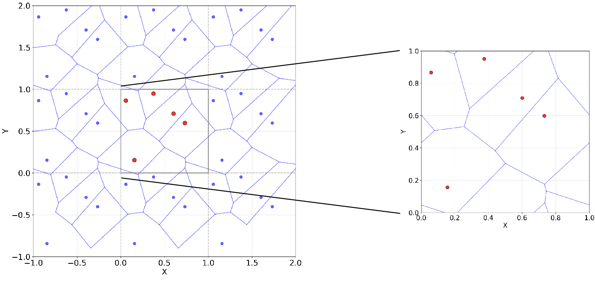

Supplement: Topologically Diverse (TD) Dataset#
Coverage
This page annotates Supplementary information, source lines 6-73. Blue blocks reproduce or faithfully restate the original source material. Amber blocks are model-added interpretation explaining role, assumptions, and reading context.
Reading lens
This supplementary section fills in implementation detail or additional evidence that the main text compresses.
Read it as support for reproducibility: generation procedures, additional RTPxyz results, and fold-level performance tables.
Where the main text states a result, the supplement often exposes the variation or construction detail behind it.
Annotated Source#
Topologically Diverse (TD) Dataset#
Original paper material - source lines 6-6
6 | \section{Topologically Diverse (TD) Dataset}
Readable text
Topologically Diverse (TD) Dataset
Model-added interpretation - source lines 6-6
This heading opens a new logical unit: Topologically Diverse (TD) Dataset.
Use it as a checkpoint: the paper is changing either scale, object, method, or evidential role.
This broadens the study beyond RTP by adding structurally diverse families that test whether the descriptor idea generalizes.
In the dataset section, this block defines the experimental material on which all later descriptor comparisons depend.
Original paper material - source lines 7-8
7 | The RTP dataset is described in detail in the main text. All porous structures used in this study—including the RTP, TD, and ATTD datasets—are openly available in the dedicated repository associated with this paper: \url{https://github.com/dioscuri-tda/direction-aware-tda-for-porous-materials}.
8 | The repository also provides a utility for converting the voxelized data into VTK format, enabling straightforward visualization and rendering using standard tools such as ParaView.
Readable text
The RTP dataset is described in detail in the main text. All porous structures used in this study—including the RTP, TD, and ATTD datasets—are openly available in the dedicated repository associated with this paper: https://github.com/dioscuri-tda/direction-aware-tda-for-porous-materials. The repository also provides a utility for converting the voxelized data into VTK format, enabling straightforward visualization and rendering using standard tools such as ParaView.
Model-added interpretation - source lines 7-8
This keeps the physical object in view: porous solid/void geometry is the structure whose topology and mechanics are being related.
This introduces or uses TDA as a multiscale language for connectivity, loops, cavities, and Euler-characteristic summaries.
This is central to the paper: the loading direction must survive the descriptor construction because the material response is axis-dependent.
This defines the RTP construction, where anisotropy is controlled in Fourier space before thresholding into a porous structure.
This broadens the study beyond RTP by adding structurally diverse families that test whether the descriptor idea generalizes.
Generation of porous structures#
Original paper material - source lines 10-10
10 | \subsection{Generation of porous structures}
Readable text
Generation of porous structures
Model-added interpretation - source lines 10-10
This heading opens a new logical unit: Generation of porous structures.
Use it as a checkpoint: the paper is changing either scale, object, method, or evidential role.
This keeps the physical object in view: porous solid/void geometry is the structure whose topology and mechanics are being related.
This broadens the study beyond RTP by adding structurally diverse families that test whether the descriptor idea generalizes.
In the dataset section, this block defines the experimental material on which all later descriptor comparisons depend.
Random Voronoi structuresapp:voronois#
Original paper material - source lines 11-11
11 | \subsubsection{Random Voronoi structures}\label{app:voronois}
Readable text
Random Voronoi structures (label: app:voronois)
Model-added interpretation - source lines 11-11
This heading opens a new logical unit: Random Voronoi structuresapp:voronois.
Use it as a checkpoint: the paper is changing either scale, object, method, or evidential role.
This broadens the study beyond RTP by adding structurally diverse families that test whether the descriptor idea generalizes.
In the dataset section, this block defines the experimental material on which all later descriptor comparisons depend.
Original paper material - source lines 13-13
13 | 600 random Voronoi structures were generated. For each structure, between 3 and 12 points were sampled from a unit cell (randomly, uniform distribution), with the space between them tesselated into Voronoi regions and the edges between regions used as a skeleton for the structure. The voxels traversed by the edges are approximated using the Bresenham's Line Algorithm~\cite{bresenham1965algorithm} and included within the structure. The edges are thickened to form struts with a square-shaped cross-section, with the side length of the square randomly drawn from the uniform distribution between 0.06 and 0.14. In order to guarantee periodicity of the structure, copies of the original points are generated in cells neighbouring the unit cell as well and the Voronoi tesselation of space, voxelisation of edges and subsequent thickening is conducted within the neighbouring cells as well (see Fig. \ref{fig:voronoi} for a visualization of a 2D version of the procedure), with the neighboring cells discarded at the last stage of the procedure.
Readable text
600 random Voronoi structures were generated. For each structure, between 3 and 12 points were sampled from a unit cell (randomly, uniform distribution), with the space between them tesselated into Voronoi regions and the edges between regions used as a skeleton for the structure. The voxels traversed by the edges are approximated using the Bresenham’s Line Algorithm (citation: bresenham1965algorithm) and included within the structure. The edges are thickened to form struts with a square-shaped cross-section, with the side length of the square randomly drawn from the uniform distribution between 0.06 and 0.14. In order to guarantee periodicity of the structure, copies of the original points are generated in cells neighbouring the unit cell as well and the Voronoi tesselation of space, voxelisation of edges and subsequent thickening is conducted within the neighbouring cells as well (see Fig. (ref: fig:voronoi) for a visualization of a 2D version of the procedure), with the neighboring cells discarded at the last stage of the procedure.
Model-added interpretation - source lines 13-13
This keeps the physical object in view: porous solid/void geometry is the structure whose topology and mechanics are being related.
This broadens the study beyond RTP by adding structurally diverse families that test whether the descriptor idea generalizes.
In the dataset section, this block defines the experimental material on which all later descriptor comparisons depend.
Original paper material - source lines 15-20
15 | \begin{figure}[h!]
16 | \centering
17 | \includegraphics[width=0.89\linewidth]{Voronoi.png}
18 | \caption{A 2D visualisation of the algorithm for generating random Voronoi structures satisfying periodic boundary conditions.}
19 | \label{fig:voronoi}
20 | \end{figure}
Readable text
A 2D visualisation of the algorithm for generating random Voronoi structures satisfying periodic boundary conditions.
Figure assets carried into the book

Model-added interpretation - source lines 15-20
This figure is evidential, not decorative: it gives visual grounding for the structures, descriptors, or performance pattern discussed around it.
Read the caption carefully because it usually encodes the variables and comparisons that make the visual scientifically meaningful.
This broadens the study beyond RTP by adding structurally diverse families that test whether the descriptor idea generalizes.
In the dataset section, this block defines the experimental material on which all later descriptor comparisons depend.
Zeolitessec:zeolites#
Original paper material - source lines 22-22
22 | \subsubsection{Zeolites}\label{sec:zeolites}
Readable text
Zeolites (label: sec:zeolites)
Model-added interpretation - source lines 22-22
This heading opens a new logical unit: Zeolitessec:zeolites.
Use it as a checkpoint: the paper is changing either scale, object, method, or evidential role.
This broadens the study beyond RTP by adding structurally diverse families that test whether the descriptor idea generalizes.
In the dataset section, this block defines the experimental material on which all later descriptor comparisons depend.
Original paper material - source lines 24-25
24 | More than 3000 predicted zeolitic structures were recovered from Michael Deem's database~\cite{C0CP02255A, deem2023pcod}. Each structure is described by the basis cell vector and the locations of Si and O atoms in a unit cell. We restricted the studies to structures with a perpendicular shape of the unit cell, which still left over 1500 structures. We transformed the structures from perpendicular to the normalized $1\times1\times1$ cubic volume by stretching/compression. We thickened the edges by dilation to form struts with a square-shaped cross-section of side length 0.12. We used 300 randomly drawn structures from the dataset and connected the locations of the Si atoms in these structures after the stretching/compression to the locations of their nearest Si neighbors (O atoms were not used in the structure). The connections formed the skeleton of the structure. Periodic boundary conditions were guaranteed by a procedure similar to the one used for random Voronoi structures, involving generating copies of the original Si atom locations in cells neighbouring the unit cell and connecting them to their nearest neighbours as well. Another 299 structures were created on the basis of different randomly drawn structures from using Michael Deem's database~\cite{C0CP02255A, deem2023pcod} using the same algorithm, but with using 0.04 instead of 0.12 as the side length of the square-shaped cross-section of the struts.
25 | This gives a total of 580 zeolite structures. %599
Readable text
More than 3000 predicted zeolitic structures were recovered from Michael Deem’s database (citation: C0CP02255A, deem2023pcod). Each structure is described by the basis cell vector and the locations of Si and O atoms in a unit cell. We restricted the studies to structures with a perpendicular shape of the unit cell, which still left over 1500 structures. We transformed the structures from perpendicular to the normalized \(1x1x1\) cubic volume by stretching/compression. We thickened the edges by dilation to form struts with a square-shaped cross-section of side length 0.12. We used 300 randomly drawn structures from the dataset and connected the locations of the Si atoms in these structures after the stretching/compression to the locations of their nearest Si neighbors (O atoms were not used in the structure). The connections formed the skeleton of the structure. Periodic boundary conditions were guaranteed by a procedure similar to the one used for random Voronoi structures, involving generating copies of the original Si atom locations in cells neighbouring the unit cell and connecting them to their nearest neighbours as well. Another 299 structures were created on the basis of different randomly drawn structures from using Michael Deem’s database (citation: C0CP02255A, deem2023pcod) using the same algorithm, but with using 0.04 instead of 0.12 as the side length of the square-shaped cross-section of the struts. This gives a total of 580 zeolite structures.
Model-added interpretation - source lines 24-25
This connects geometry to the target variable: directional Young’s modulus under a specified loading axis.
This broadens the study beyond RTP by adding structurally diverse families that test whether the descriptor idea generalizes.
This constructs anisotropy by transforming otherwise diverse structures, giving a bridge between controlled RTP anisotropy and heterogeneous real-looking morphologies.
In the dataset section, this block defines the experimental material on which all later descriptor comparisons depend.
Diamond structures#
Original paper material - source lines 27-27
27 | \subsubsection{Diamond structures}
Readable text
Diamond structures
Model-added interpretation - source lines 27-27
This heading opens a new logical unit: Diamond structures.
Use it as a checkpoint: the paper is changing either scale, object, method, or evidential role.
This broadens the study beyond RTP by adding structurally diverse families that test whether the descriptor idea generalizes.
In the dataset section, this block defines the experimental material on which all later descriptor comparisons depend.
Original paper material - source lines 29-29
29 | 299 diamond-resembling structures were generated. Each structure was generated by creating within the unit cell 8 vertices corresponding to atoms in a diamond lattice and creating between the vertices edges corresponding to bonds between the atoms. The precise locations of the vertices were determined by adding a stochastic displacement to the location of the corresponding atom in the diamond lattice. Each of the three-dimensional components of the stochastic displacement for all vertices in a given lattice were drawn from a normal distribution with a standard deviation $\epsilon$ itself drawn from a uniform distribution between 0 and 0.1 (compare to 1.0 being the length of the side of a unit cell). That way, the amount of stochasticity was varied between the structures. The edges connecting the vertices were thickened via dilation to form struts with square-shaped cross-sections, with the length of the side of the cross-section drawn from a uniform distribution between 0.06 and 0.26. That way, the volume fraction was varied between structures.
Readable text
299 diamond-resembling structures were generated. Each structure was generated by creating within the unit cell 8 vertices corresponding to atoms in a diamond lattice and creating between the vertices edges corresponding to bonds between the atoms. The precise locations of the vertices were determined by adding a stochastic displacement to the location of the corresponding atom in the diamond lattice. Each of the three-dimensional components of the stochastic displacement for all vertices in a given lattice were drawn from a normal distribution with a standard deviation $$ itself drawn from a uniform distribution between 0 and 0.1 (compare to 1.0 being the length of the side of a unit cell). That way, the amount of stochasticity was varied between the structures. The edges connecting the vertices were thickened via dilation to form struts with square-shaped cross-sections, with the length of the side of the cross-section drawn from a uniform distribution between 0.06 and 0.26. That way, the volume fraction was varied between structures.
Model-added interpretation - source lines 29-29
This broadens the study beyond RTP by adding structurally diverse families that test whether the descriptor idea generalizes.
In the dataset section, this block defines the experimental material on which all later descriptor comparisons depend.
Cubic structures#
Original paper material - source lines 31-31
31 | \subsubsection{Cubic structures}
Readable text
Cubic structures
Model-added interpretation - source lines 31-31
This heading opens a new logical unit: Cubic structures.
Use it as a checkpoint: the paper is changing either scale, object, method, or evidential role.
This broadens the study beyond RTP by adding structurally diverse families that test whether the descriptor idea generalizes.
In the dataset section, this block defines the experimental material on which all later descriptor comparisons depend.
Original paper material - source lines 33-40
33 | 300 structures resembling a simple cubic strut were generated using the procedure used for diamond structures, with the only difference the 8 initiating points are not the locations of atoms in a diamond structures like in the former dataset, but instead the following set of points: [0, 0, 0],
34 | [0.5, 0, 0],
35 | [0, 0.5, 0],
36 | [0, 0, 0.5],
37 | [0, 0.5, 0.5],
38 | [0.5, 0, 0.5],
39 | [0.5, 0.5, 0],
40 | [0.5, 0.5, 0.5]. Replicating further steps from the procedure used to generate the diamond-like structures leads to structures resembling a classical cubic strut, with varying thicknesses of the struts and levels of randomization in locations of the struts' vertices.
Readable text
300 structures resembling a simple cubic strut were generated using the procedure used for diamond structures, with the only difference the 8 initiating points are not the locations of atoms in a diamond structures like in the former dataset, but instead the following set of points: [0, 0, 0], [0.5, 0, 0], [0, 0.5, 0], [0, 0, 0.5], [0, 0.5, 0.5], [0.5, 0, 0.5], [0.5, 0.5, 0], [0.5, 0.5, 0.5]. Replicating further steps from the procedure used to generate the diamond-like structures leads to structures resembling a classical cubic strut, with varying thicknesses of the struts and levels of randomization in locations of the struts’ vertices.
Model-added interpretation - source lines 33-40
This broadens the study beyond RTP by adding structurally diverse families that test whether the descriptor idea generalizes.
In the dataset section, this block defines the experimental material on which all later descriptor comparisons depend.
Splines#
Original paper material - source lines 43-43
43 | \subsubsection{Splines}
Readable text
Splines
Model-added interpretation - source lines 43-43
This heading opens a new logical unit: Splines.
Use it as a checkpoint: the paper is changing either scale, object, method, or evidential role.
This broadens the study beyond RTP by adding structurally diverse families that test whether the descriptor idea generalizes.
In the dataset section, this block defines the experimental material on which all later descriptor comparisons depend.
Original paper material - source lines 45-46
45 | To generate a family of smooth porous morphologies, we construct a random \emph{periodic} scalar field on the unit cell and then threshold it.
46 | Let $n=\texttt{sampling}$ be the number of spline control points per direction and draw i.i.d.\ coefficients
Readable text
To generate a family of smooth porous morphologies, we construct a random periodic scalar field on the unit cell and then threshold it. Let \(n=`sampling`\) be the number of spline control points per direction and draw i.i.d.\ coefficients
Model-added interpretation - source lines 45-46
This keeps the physical object in view: porous solid/void geometry is the structure whose topology and mechanics are being related.
This is central to the paper: the loading direction must survive the descriptor construction because the material response is axis-dependent.
This explains how continuous fields become admissible binary materials and why connectivity/percolation filters are needed for mechanical tests.
This broadens the study beyond RTP by adding structurally diverse families that test whether the descriptor idea generalizes.
In the dataset section, this block defines the experimental material on which all later descriptor comparisons depend.
Original paper material - source lines 47-49
47 | \begin{equation}
48 | r_{ijk}\sim\mathcal U(0,1),\qquad i,j,k=1,\dots,n .
49 | \end{equation}
Model-added interpretation - source lines 47-49
This mathematical block defines part of the computational object used later in the pipeline.
Track the variables here: later descriptors and model inputs inherit these definitions.
This broadens the study beyond RTP by adding structurally diverse families that test whether the descriptor idea generalizes.
In the dataset section, this block defines the experimental material on which all later descriptor comparisons depend.
Original paper material - source lines 50-52
50 | In \textsc{Mathematica}, the command
51 | \texttt{BSplineFunction} builds a trivariate tensor-product B-spline field
52 | (with \texttt{SplineDegree->3}, \texttt{SplineClosed->True}, \texttt{SplineKnots->"Unclamped"}), i.e.
Readable text
In Mathematica, the command
BSplineFunctionbuilds a trivariate tensor-product B-spline field (withSplineDegree->3,SplineClosed->True,SplineKnots->"Unclamped"), i.e.
Model-added interpretation - source lines 50-52
This broadens the study beyond RTP by adding structurally diverse families that test whether the descriptor idea generalizes.
In the dataset section, this block defines the experimental material on which all later descriptor comparisons depend.
Original paper material - source lines 53-57
53 | \begin{equation}
54 | f(x,y,z)=\sum_{i=1}^{n}\sum_{j=1}^{n}\sum_{k=1}^{n}
55 | r_{ijk}\,N_{i,3}(x)\,N_{j,3}(y)\,N_{k,3}(z),
56 | \label{eq:spline_field}
57 | \end{equation}
Model-added interpretation - source lines 53-57
This mathematical block defines part of the computational object used later in the pipeline.
Track the variables here: later descriptors and model inputs inherit these definitions.
This broadens the study beyond RTP by adding structurally diverse families that test whether the descriptor idea generalizes.
In the dataset section, this block defines the experimental material on which all later descriptor comparisons depend.
Original paper material - source lines 58-58
58 | where $\{N_{i,3}\}$ are cubic B-spline basis functions (defined via the Cox--de Boor recursion), and the ``closed'' setting enforces periodicity across the cell boundaries \cite{deBoor1978,wolframBSplineFunction}.
Readable text
where $\N_i,3$ are cubic B-spline basis functions (defined via the Cox–de Boor recursion), and the ``closed’’ setting enforces periodicity across the cell boundaries (citation: deBoor1978,wolframBSplineFunction).
Model-added interpretation - source lines 58-58
This broadens the study beyond RTP by adding structurally diverse families that test whether the descriptor idea generalizes.
In the dataset section, this block defines the experimental material on which all later descriptor comparisons depend.
Original paper material - source lines 60-61
60 | A binary structure is then obtained as a super-level set. Using wrapped (periodic) coordinates
61 | $\tilde{\boldsymbol{x}}=(x\bmod 1,\,y\bmod 1,\,z\bmod 1)$ (implemented with \texttt{Mod}), we voxelize on an $L\times L\times L$ grid (here $L=80$) by
Readable text
A binary structure is then obtained as a super-level set. Using wrapped (periodic) coordinates \(x=(x 1, y 1, z 1)\) (implemented with
Mod), we voxelize on an \(Lx Lx L\) grid (here \(L=80\)) by
Model-added interpretation - source lines 60-61
This keeps the physical object in view: porous solid/void geometry is the structure whose topology and mechanics are being related.
This explains how continuous fields become admissible binary materials and why connectivity/percolation filters are needed for mechanical tests.
This broadens the study beyond RTP by adding structurally diverse families that test whether the descriptor idea generalizes.
In the dataset section, this block defines the experimental material on which all later descriptor comparisons depend.
Original paper material - source lines 62-66
62 | \begin{equation}
63 | T_{abc}(t)=\mathbf{1}\Bigl\{\,f\!\bigl(\tfrac{a}{L},\tfrac{b}{L},\tfrac{c}{L}\bigr)\ge t\,\Bigr\},
64 | \qquad a,b,c=0,\dots,L-1,
65 | \label{eq:thresholding}
66 | \end{equation}
Model-added interpretation - source lines 62-66
This mathematical block defines part of the computational object used later in the pipeline.
Track the variables here: later descriptors and model inputs inherit these definitions.
This explains how continuous fields become admissible binary materials and why connectivity/percolation filters are needed for mechanical tests.
This broadens the study beyond RTP by adding structurally diverse families that test whether the descriptor idea generalizes.
In the dataset section, this block defines the experimental material on which all later descriptor comparisons depend.
Original paper material - source lines 67-67
67 | and report the volume fraction
Readable text
and report the volume fraction
Model-added interpretation - source lines 67-67
This broadens the study beyond RTP by adding structurally diverse families that test whether the descriptor idea generalizes.
In the dataset section, this block defines the experimental material on which all later descriptor comparisons depend.
Original paper material - source lines 68-70
68 | \begin{equation}
69 | \phi(t)=\frac{1}{L^{3}}\sum_{a,b,c} T_{abc}(t).
70 | \end{equation}
Model-added interpretation - source lines 68-70
This mathematical block defines part of the computational object used later in the pipeline.
Track the variables here: later descriptors and model inputs inherit these definitions.
This broadens the study beyond RTP by adding structurally diverse families that test whether the descriptor idea generalizes.
In the dataset section, this block defines the experimental material on which all later descriptor comparisons depend.
Original paper material - source lines 71-72
71 | Varying the threshold $t$ (in our implementation, on an approximately uniform grid in $[0.35,0.50]$) produces two independent subsets of spline-based structures each, spanning a range of $\phi(t)$ while preserving smoothness and periodic tiling of the unit cell.
72 | Total of 596 spline structures were used in the dataset.
Readable text
Varying the threshold \(t\) (in our implementation, on an approximately uniform grid in \([0.35,0.50]\)) produces two independent subsets of spline-based structures each, spanning a range of \(phi(t)\) while preserving smoothness and periodic tiling of the unit cell. Total of 596 spline structures were used in the dataset.
Model-added interpretation - source lines 71-72
This explains how continuous fields become admissible binary materials and why connectivity/percolation filters are needed for mechanical tests.
This broadens the study beyond RTP by adding structurally diverse families that test whether the descriptor idea generalizes.
In the dataset section, this block defines the experimental material on which all later descriptor comparisons depend.